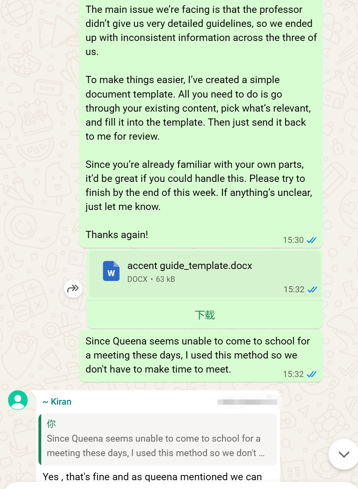
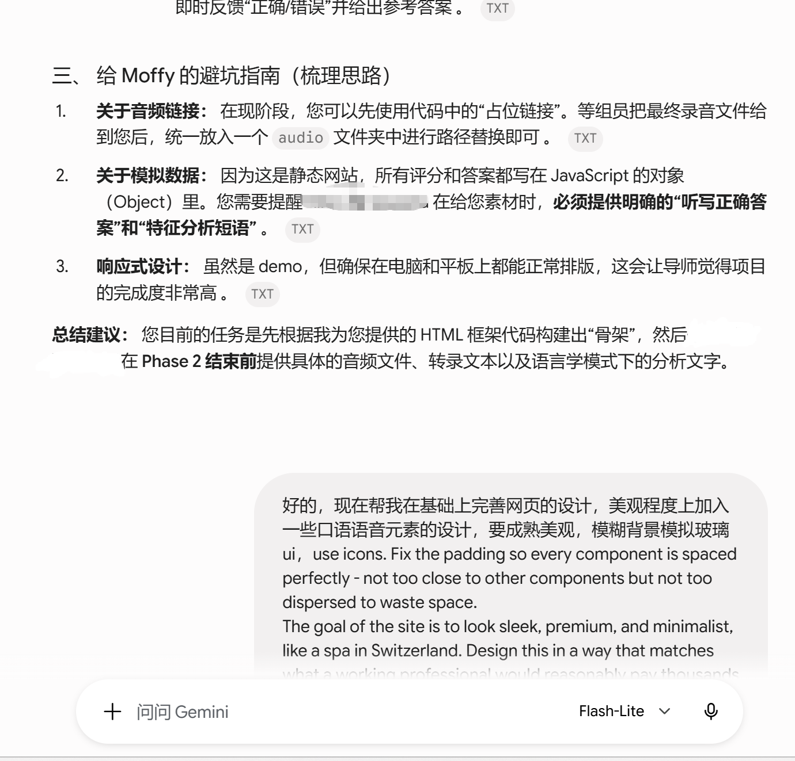
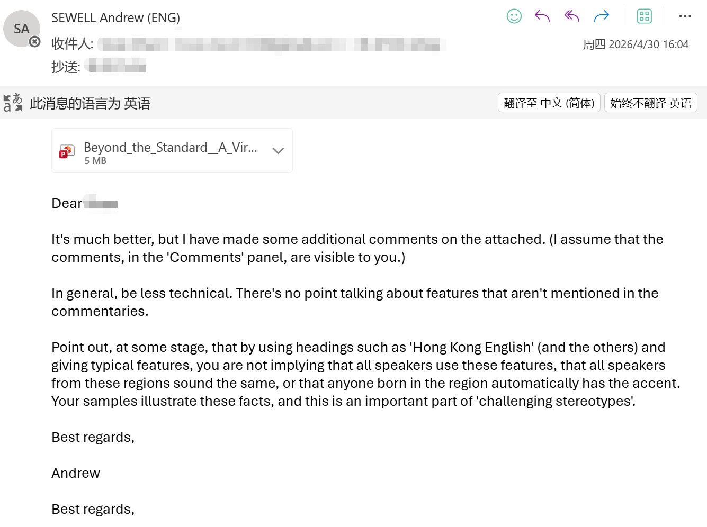

选择口音
从英、美、中、港、巴五类样本进入。
零开发经验下，借助 AI 独立完成 World English Accents 交互式学习平台 0→1：从问题定义、产品结构、跨语言内容协作，到 5 类口音、15 个样本的网页开发与 10 次公开部署。
项目起点只是一个方向性教学课题。我的产品判断是：专业语料库内容丰富但缺少学习引导，普通视频容易接触却缺少系统标注与练习。因此以中高级 EFL 学习者为核心用户，将内容重新组织为五步学习路径。
从英、美、中、港、巴五类样本进入。
先听音频，建立未经提示的第一判断。
对照语音材料与文本内容。
用轻量练习确认是否真正听懂。
再进入发音规律与语言学解释。
降低初次学习门槛，用清晰提示建立完成感。
承载进阶分析，让专业信息按需展开而非一次压给用户。
三人提交的录音、转写、语言分析和题目口径不一致。
统一音频、转写、分析与题目模板，明确每个字段的质量要求。
通过英文沟通明确交付方式、文件格式、责任人与截止时间。
回收后集中审核，修正口径差异，再统一集成进网站并上线。

先明确页面结构、音频、转写与测试四类核心模块。
上传语料与参考内容，向 AI 说明字段关系和展示顺序。
逐步补充风格、间距、信息层级和响应式要求。
逐项核对内容、音频、跳转和部署结果，避免把生成结果直接当成完成。

形成“阶段提交 → 反馈拆解 → 团队执行 → 网站更新”的闭环，让学术意见不止停留在讨论层，而是落进网页结构和内容规范。

聚焦“口音听辨体验”，在首屏明确网页价值；减少一次性解释，把用户引导嵌入任务流程，并让每次测试都对应清晰的学习目标。